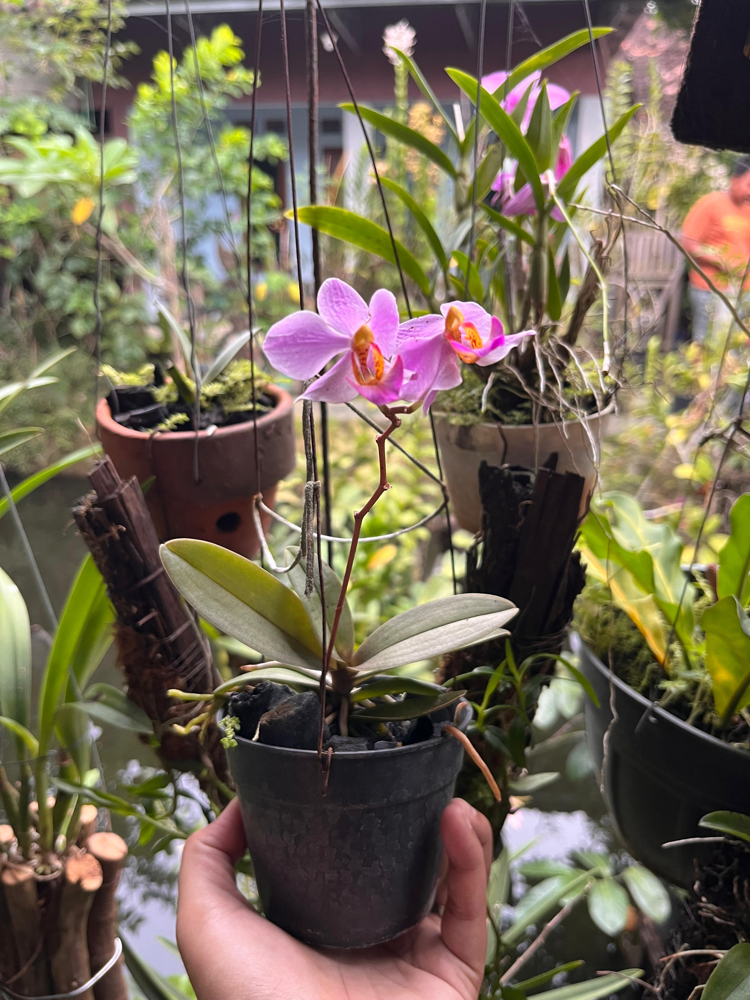
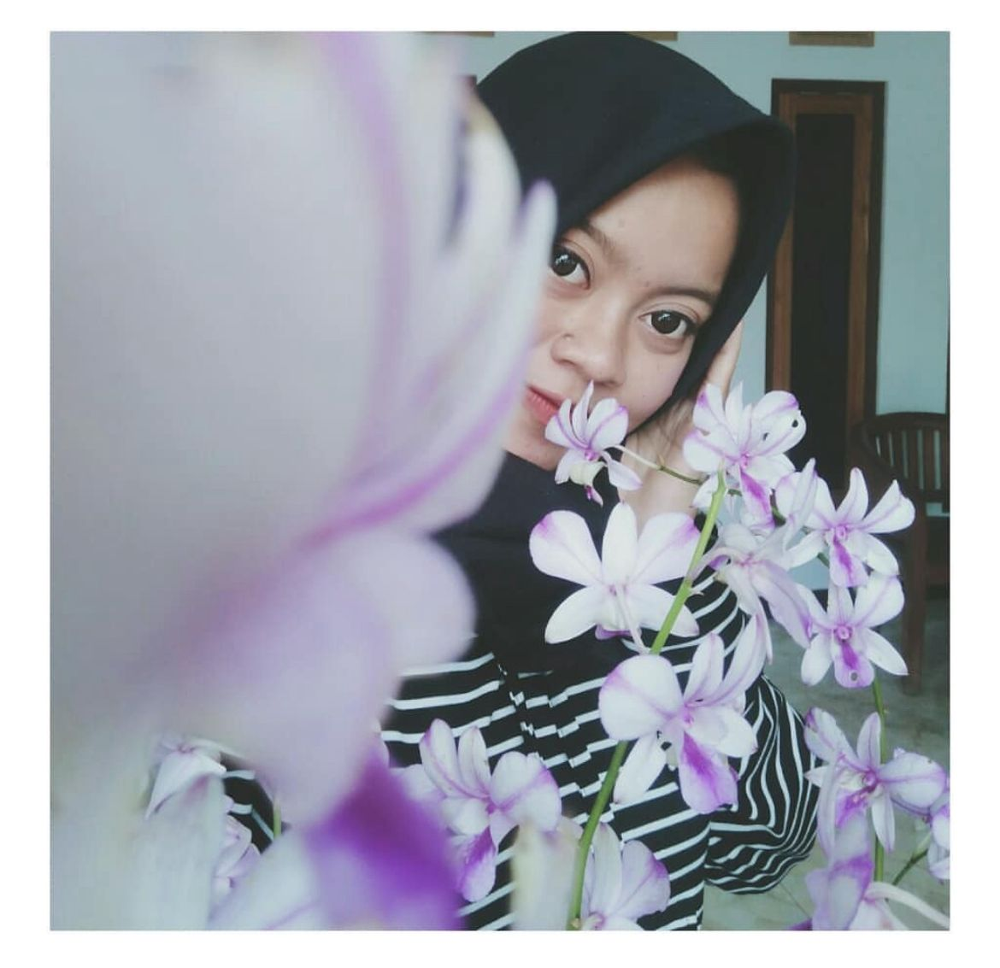
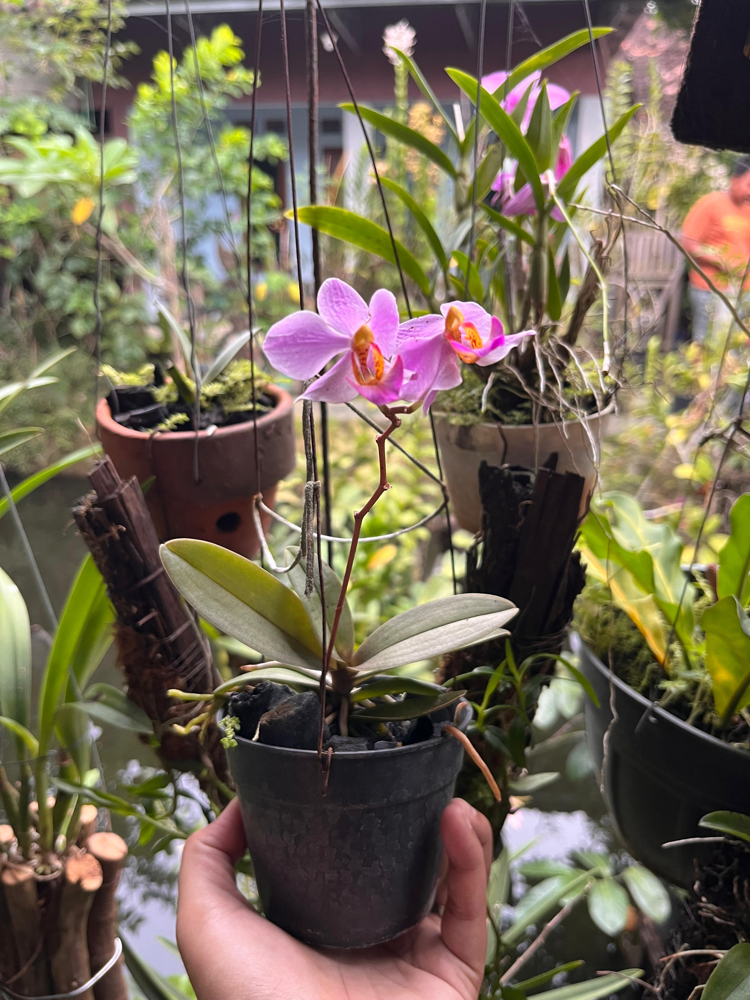
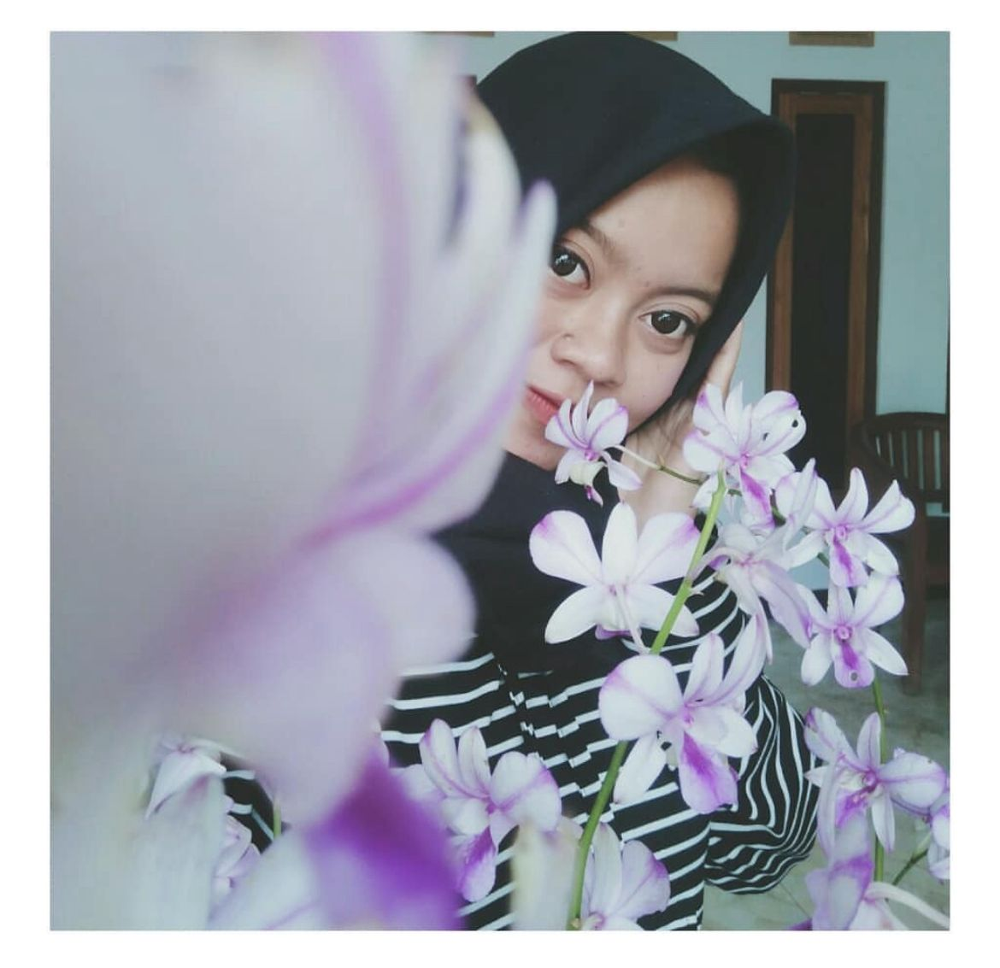

Halo, saya Nadiya Nurul Alawiyah!
Saya adalah pecinta tanaman anggrek dari Klaten, Jawa Tengah. Sejak kecil saya sudah menyukai tanaman, terutama anggrek karena keindahannya yang unik dan penuh makna.
Sebetulnya bisnis ini adalah bisnis milik kedua orang tua saya, mereka sangat hobi tanaman anggrek. Mereka menghabiskan waktunya untuk berburu anggrek.
Tidak heran jika koleksi anggrek yang mereka punya sangat beragam, dari anggrek lokal sampai dengan berbagai macam spesies.
Hal yang lucu, awalnya saya tidak begitu tertarik dengan bisnis ini. Namun setelah mencoba melihat, menilai, dan sedikit belajar mengenai anggrek, saya bukan hanya mencicipi namun sudah terlanjur basah tercemplung bisnis keluarga ini. hahaha
Jika kalian belum menyukainya, coba dan selamlah lebih jauh. Suatu saat tentu kalian akan menyukainya!
Website ini saya buat untuk berbagi informasi, tips merawat anggrek, dan juga menjual koleksi anggrek yang saya rawat sendiri dengan penuh cinta.
Semoga Rumah Anggrekku bisa jadi tempat belajar, belanja, dan berkoneksi bagi sesama pecinta anggrek di seluruh Indonesia ??
Visi & Misi
- Visi: Menjadikan anggrek sebagai bagian dari gaya hidup hijau dan sehat.
- Misi:
- Menyediakan anggrek berkualitas dengan harga terjangkau
- Memberikan edukasi gratis seputar perawatan anggrek
- Membantu pemula memulai hobi berkebun anggrek
Galeri Koleksi & Momen
 



Daftar Koleksi Anggrek


Inilah koleksi anggrek yang saya rawat sendiri di kebun kecil saya ??